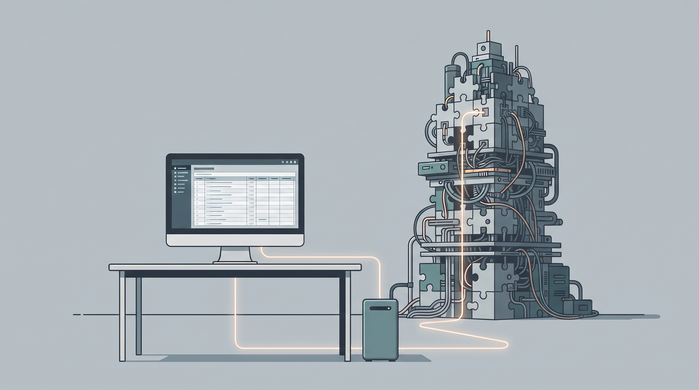

A Síndrome do Front-End Pesado: Quando a Arquitetura Esquece os 5.500 Municípios
O arquiteto na Faria Lima desenha o SPA com primor,
junta pacote e framework, sem medir o seu valor.
Mas lá na ponta da linha, num rincão do interior,
o computador engasga e o sistema dá pavor.
Engenharia de verdade não é moda nem vaidade:
é entregar o que precisa com respeito e agilidade.
A pergunta desconfortável
Em grandes organizações corporativas e órgãos com responsabilidade nacional, discussões arquiteturais costumam ser travadas em salas climatizadas, diante de monitores de última geração e conexões de fibra óptica dedicadas. Nesse ambiente estéril, uma decisão parece natural e incontestável: padronizar uma camada pesada de front-end em Single Page Application (SPA), separando rigidamente o mundo em duas aplicações completas que se comunicam por dezenas de endpoints REST.
Os argumentos são quase litúrgicos: "o mercado padronizou assim", "as consultorias recomendam", "precisamos de separação de responsabilidades". Assim, o framework de front-end vira a resposta padrão antes mesmo de se compreender a pergunta.
Mas basta descer ao chão da operação para que essa certeza desmorone. O sistema em questão não é um jogo tridimensional, nem uma rede social em tempo real. É, na esmagadora maioria das vezes, um CRUD corporativo essencial: cadastros, filtros, tabelas, aprovações e relatórios administrativos.
O mito do cliente rico e a geografia do hardware
Desenvolver software em escala nacional no Brasil exige responsabilidade territorial. Uma solução concebida para atender mais de 5.500 municípios não pode presumir que o usuário final opera uma estação de trabalho moderna com dezenas de gigabytes de memória sobrando.
A realidade dos municípios brasileiros é marcada por:
- Estações de trabalho com cinco, oito ou dez anos de uso ininterrupto;
- Memória RAM restrita, já disputada pelo sistema operacional e por outras rotinas locais;
- Conexões de internet oscilantes, via rádio, enlaces saturados ou rotas de alta latência;
- Ausência de equipes locais de suporte de TI para depurar falhas de execução no navegador.
Quando empacotamos megabytes de JavaScript — combinando frameworks pesados, gerenciadores de estado complexos, bibliotecas visuais massivas e árvores de dependências infindáveis — para simplesmente preencher uma tabela de dez linhas, transferimos o custo de processamento para quem menos tem como pagar: o operador da ponta.
O espelho da IA: revelando a complexidade acidental
Um fenômeno curioso do uso moderno de inteligência artificial no desenvolvimento de software é a sua capacidade de expor inconsistências conceituais. Quando solicitada a analisar o ciclo de vida de uma funcionalidade típica de cadastro corporativo, a resposta técnica mais limpa raramente envolve criar duas aplicações separadas.
O fluxo essencial é direto e linear:
- O navegador faz uma requisição HTTP;
- O backend valida regras de negócio e consulta a persistência;
- Um template no servidor interpola os dados de forma segura;
- O HTML semântico e enxuto é devolvido diretamente ao cliente.
Não há feitiçaria nisso. Foi exatamente assim que a web se consolidou e se tornou universal. Quando questionada com rigor, a própria IA expõe que boa parte das camadas intermediárias — DTOs duplicados entre TypeScript e Java, controladores extras, adaptadores de estado reativo e pipelines redundantes — existem para sustentar a decisão do framework, não a necessidade do negócio.
O custo invisível da duplicação
O verdadeiro prejuízo de uma arquitetura dogmática raramente aparece na fatura inicial da nuvem; ele corrói o orçamento na manutenção contínua ao longo de anos:
- Duplicação de domínio: A mesma regra de negócio precisa ser implementada no front-end para validação visual e no back-end para segurança;
- Pipelines e deploys descompassados: Versionamento de contratos de API que exigem sincronização minuciosa e esteiras de CI/CD redundantes;
- Fragmentação de equipe: Desenvolvedores que passam a atuar em silos estanques, perdendo a visão holística do produto;
- Fragilidade no cliente: Se o navegador engasga na montagem do DOM via JavaScript, a tela congela silenciosamente, gerando chamados de suporte quase impossíveis de reproduzir.
A volta do bom senso: HTML-First e SSR Moderno
A boa engenharia de software não é avessa à modernidade; ela apenas recusa o desperdício. Hoje, ecossistemas maduros como o Quarkus com Qute, aliados a abordagens como HTMX, Alpine.js ou CSS moderno, provam que é plenamente viável construir interfaces dinâmicas, rápidas e visualmente elegantes sem sobrecarregar o cliente.
Nesse modelo pragmático:
- O servidor faz o trabalho pesado onde há poder computacional controlado;
- O navegador recebe o HTML pronto e apenas renderiza o conteúdo com mínimo consumo de CPU;
- Interações reativas pontuais são tratadas como exceção cirúrgica, não como norma universal;
- O consumo de memória no cliente cai para uma fração do que exigiria uma SPA tradicional.
Engenharia para o mundo real
O debate não é uma disputa simplista entre Angular e Quarkus, ou front-end versus back-end. Trata-se de maturidade arquitetural: entender que cada camada adicionada tem um custo perene de sustentação. Quando a tecnologia serve à vaidade da equipe ou à inércia de mercado, o produto perde. Quando ela serve com sobriedade à realidade de quem usa, a engenharia cumpre o seu papel.
Hashtags
Contato
- Site institucional: www.caracore.com.br
- Ecossistema: www.caracore.com.br/ecosistema.html#roadmap
- E-mail: suporte@caracore.com.br
- LinkedIn: Cara Core Informática
Menos complexidade acidental, mais respeito ao cliente e soberania na ponta da linha.
Artigo publicado em 10 de julho de 2027
© 2027 Cara Core Informática. Todos os direitos reservados.